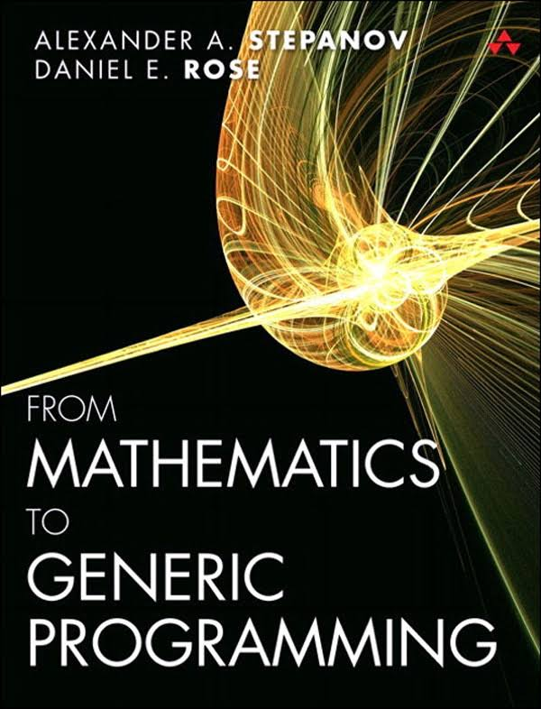
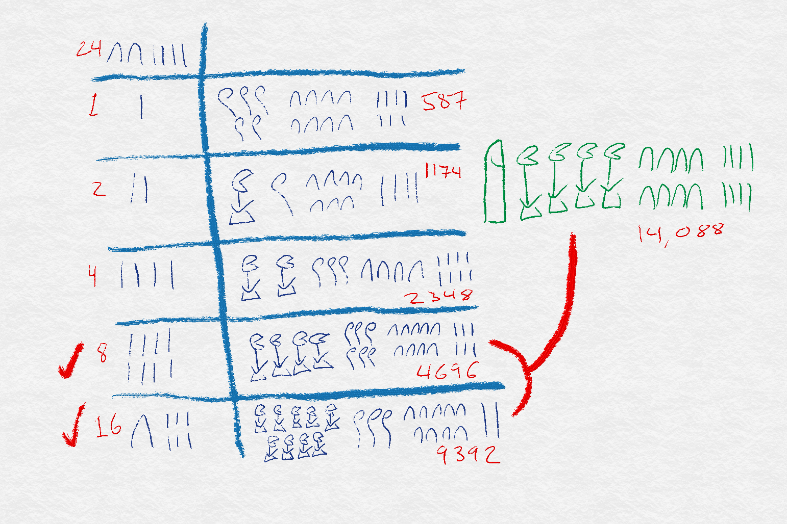
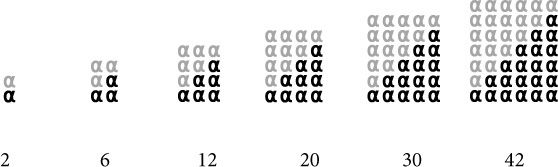
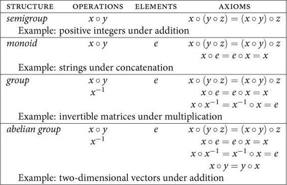
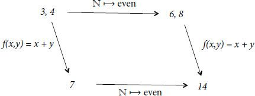

<!doctype html>
<html>
	<head>
		<meta charset="utf-8">
		<meta name="viewport" content="width=device-width, initial-scale=1.0, maximum-scale=1.0, user-scalable=no">

		<title>From Mathematics to Generic Programming</title>

		<link rel="stylesheet" href="css/reveal.css">
		<link rel="stylesheet" href="css/theme/solarized.css">

		<!-- Theme used for syntax highlighting of code -->
		<link rel="stylesheet" href="lib/css/zenburn.css">
    <style>
      .reveal pre {
        box-shadow: none;
      }
      .reveal pre code {
        max-height: 600px;
      }
      .session-title {
        text-shadow: 1px 1px 2px black, 0 0 1em blue, 0 0 0.2em blue !important
      }
      .jest-logo {
        position: relative;
        left: 4rem;
        width: 30rem;
        border: none !important;
        box-shadow: none !important;
      }

      .row {
        display: flex;
      }
      .column {
        flex: 1;
      }
      .column-2 {
        flex: 2;
      }
      .column-3 {
        flex: 3;
      }
    </style>

		<!-- Printing and PDF exports -->
		<script>
			var link = document.createElement( 'link' );
			link.rel = 'stylesheet';
			link.type = 'text/css';
			link.href = window.location.search.match( /print-pdf/gi ) ? 'css/print/pdf.css' : 'css/print/paper.css';
			document.getElementsByTagName( 'head' )[0].appendChild( link );
		</script>
	</head>
	<body>
		<div class="reveal">
			<div class="slides">
				<section data-markdown>
					<script type="text/template">
# From Mathematics to Generic Programming

chun@tubi.tv
					</script>
				</section>
				<section>
          <section data-markdown>
            <script type="text/template">

            </script>
          </section>
          <section data-markdown>
            <script type="text/template">
## Author

<div class="row">
  <div class="column column-3">
    <ul>
      <li>Alexander A. Stepanov</li>
      <li>An advocate of generic programming</li>
      <li>The primary designer and implementer of the C++ <a href="https://en.wikipedia.org/wiki/Standard_Template_Library">STL</a></li>
      <li>Born Nov 16, 1950 in Moscow, retired in Jan 2016 from A9.com</li>
    </ul>
  </div>
  <div class="column">
    
  </div>
</div>
            </script>
          </section>
          <section data-markdown>
            <script type="text/template">
## Generic Programming

> An approach to programming that focuses on designing algorithms and
> data structures so that they work in the most general setting without loss of efficiency.

            </script>
          </section>
        </section>
        <section>
          <section data-markdown>
            <script type="text/template">
## Math & Algorithm
            </script>
          </section>
          <section data-markdown>
            <script type="text/template">
[Rhind Mathematical Papyrus](https://en.wikipedia.org/wiki/Rhind_Mathematical_Papyrus), about 1650 BC


            </script>
          </section>
          <section data-markdown>
            <script type="text/template">
Multiply Algorithm Demo
            </script>
          </section>
          <section data-markdown>
            <script type="text/template">
[Ancient Egyptian multiplication](https://en.wikipedia.org/wiki/Ancient_Egyptian_multiplication)


            </script>
          </section>
        </section>
        <section>
          <section data-markdown>
            <script type="text/template">
## Math & Generic Programming

Number Theory => Abstract Algebra => Generic Programming
            </script>
          </section>
          <section data-markdown>
            <script type="text/template">
## Number Theory

- Inspired by geometric properties of numbers
- Prime number: 1, 3, 5, 7, 11, ...
- [Perfect number](https://en.wikipedia.org/wiki/Perfect_number): 6 = 1 + 2 + 3
- [Fermat's little theorem](https://en.wikipedia.org/wiki/Fermat%27s_little_theorem), 1640
- [Euler's theorem](https://en.wikipedia.org/wiki/Euler%27s_theorem)


            </script>
          </section>
          <section data-markdown>
            <script type="text/template">
## Abstract Algebra

- Group is the first and most important [algebraic structure](https://en.wikipedia.org/wiki/Algebraic_structure)
- Discovered by Évariste Galois in 1832


            </script>
          </section>
          <section data-markdown>
            <script type="text/template">
## Categorical Theory

- Theory & Model
- A theory is called [categorical](https://en.wikipedia.org/wiki/Categorical_theory) if all of its models are isomorphic


            </script>
          </section>
          <section data-markdown>
            <script type="text/template">
## Demo
            </script>
          </section>
        </section>
        <section data-markdown>
          <script type="text/template">
## Key Takeaways

- Generic programming itself is more of an attitude toward programming than a particular set of tools
- Components of well-written generic program are easier to use and modify
- Generic programming comes from Mathematics, especially from abstract algebra
          </script>
        </section>
        <section data-markdown>
          <script type="text/template">
## References

- [Rhind Mathematical Papyrus](https://en.wikipedia.org/wiki/Rhind_Mathematical_Papyrus)
- [Ancient Egyptian multiplication](https://en.wikipedia.org/wiki/Ancient_Egyptian_multiplication)
          </script>
        </section>
        <section data-markdown>
          <script type="text/template">
## Thanks
          </script>
        </section>
			</div>
		</div>

		<script src="lib/js/head.min.js"></script>
		<script src="js/reveal.js"></script>

		<script>
			// More info about config & dependencies:
			// - https://github.com/hakimel/reveal.js#configuration
			// - https://github.com/hakimel/reveal.js#dependencies
			Reveal.initialize({
        controls: false,
        progress: true,
				dependencies: [
					{ src: 'plugin/markdown/marked.js' },
					{ src: 'plugin/markdown/markdown.js' },
					{ src: 'plugin/notes/notes.js', async: true },
					{ src: 'plugin/highlight/highlight.js', async: true, callback: function() { hljs.initHighlightingOnLoad(); } }
				]
			});
		</script>
	</body>
</html>
